Bắc Giang là một tỉnh có phong cảnh đẹp như Đồng Cao, Suối Mỡ, Làng Thổ Hà và nhiều di tích lịch sử nổi tiếng. Nhờ vậy du lịch Bắc Giang đang ngày một thu hút du khách hơn. Để chuyến du lịch được trọn vẹn, du khách nên lên trước lịch trình, những điểm đến, những món ăn sẽ thưởng thức. Sau đây là kinh nghiệm du lịch Bắc Giang sẽ là hành trình tốt nhất cho chuyến đi của các bạn.
I. Giới Thiệu Tổng Quan Tỉnh Bắc Giang.
Bắc Giang là một tỉnh thuộc miền trung du và châu thổ đồng bằng Bắc Bộ. Bắc và Đông Bắc Giáp với Lạng Sơn, Tây và Tây Bắc giáp với Hà Nội và Thái Nguyên, Nam và Đông Nam giáp Quảng Ninh, Hải Dương và Bắc Ninh.
Địa hình bao gồm đồng bằng, trung du và miền núi. Diện tích 3.827km2, dân tộc ngoài người Việt ra còn có các dân tộc chính là Tày, Nùng, Sán Dìu… tỉnh lỵ là thành phố Bắc Giang, có 9 huyện: Sơn Đông, Lục Ngạn, Lục Nam, yên Thế, Lạng Giang, Yên Dũng, Việt Yên, Tân Yên và Hiệp Hoà.
Trên địa bàn tỉnh Bắc Giang có nhiều sông lớn chảy qua gồm có sông Cầu, sông Thương, sôngLucj Nam rất thuận tiện cho vận tải thuỷ, góp phần tưới tiêu phục vụ sản xuất nông nghiệp và phát triển du lịch.
Bắc Giang còn có đặc điểm:
+ Nhiều hồ chứa nước có phong cảnh vừa kỳ vĩ, vừa trữ tình như hồ Cẩm Sơn, hồ Khuôn Thần.
+ Có truyền thống lễ hội văn hoá của vùng đất Kinh Bắc, truyền thống nghệ thuật sâu sắc.
+ Là nơi có nhiều làn điệu dân ca hấp dẫn tiêu biểu của Bắc bộ như hát xẩm, hát ả đào, hát quan họ và hát chèo… Dân tộc ít người ở đây cũng có điệu hát đặc thù soong hao.
II. Thời Điểm Du Lịch Bắc Giang Lý Tưởng.
Bắc Giang là một tỉnh có nhiều cảnh đẹp hoang sơ nên thu hút nhiều giới phượt thủ. Để chuyến đi du lich của bạn được thuận lợi, bạn nên theo dõi thời tiết trước 1-3 ngày, hạn chế đi lúc mưa sẽ ảnh hưởng khó khăn đi lại, cắm trại, thưởng ngoạn cảnh của du khách.
Bắc Giang có nhiều địa điểm hấp dẫn phù hợp với từng đối tượng du khách, vì thế bạn có thể đến đây bất kỳ lúc nào trong năm. Tuy nhiên để đi phượt bạn nên chọn thời gian từ tháng 6 – 7. Lúc này du khách sẽ được khám phá những con đường đỏ rực được tạo bởi những vườn quả chín mọng trông khá đẹp mắt.
III. Hướng Dẫn Phương Tiện Đi Đến Bắc Giang.
Giao thông đường bộ, đường thuỷ, đường sắt đều thuận lợi. Từ Bắc Giang có tuyến đường sắt đi Thái Nguyên và vùng đất mỏ Quảng Ninh. Quốc lộ 1A đi ngang qua tỉnh. Theo quốc lộ này, du khách có thể từ Bắc Ninh lên Lạng Sơn hoặc ngược lại.
Từ Thái Nguyên qua theo đường 37 có 2 ngả: đường phía Bắc đi vào Yên Thế, đường phía Nam đi vào Hiệp Hoà, Việt Yên, tp Bắc Giang. Từ Quảng Ninh qua bằng 2 ngả: đường 31 và 279 cùng vào Sơn Động và đường 18 vào Yên Dũng.
Thông thường du khách sẽ đi phượt Bắc Giang bằng xe máy theo quốc lộ 1A. Hoặc du khách từ thủ đô Hà Nội có thể ghé bến xe Giáp Bát để bắt xe khách hoặc đi xe bus số 203.
Nếu đi du lịch Bắc Giang bằng phương tiện cá nhân, bạn nên chuẩn bị đầy đủ giấy tờ, tuân theo quy tắc an toàn giao thông, chạy đúng tốc độ. Nên trang bị điện thoại, sạc dự phòng và bản đồ địa phương.
IV. Khách Sạn Bắc Giang Tốt Nhất Cho Du Khách.
Với nhiều bạn trẻ, giới phượt thủ vẫn thích lựa chọn phương án cắm trại để trải nghiệm cảm giác ly kỳ, tận hưởng không khí trong lành của thiên nhiên và tiết kiệm kinh phí. Hiện khu vực Đồng Cao có nhiều địa danh phù hợp với giới phượt thủ.
Nếu bạn muốn có một chốn nghỉ ngơi trong khách sạn, nhà nghỉ khi đi du lịch 2 – 3 hôm có thể chọn một số khách sạn tại trung tâm thành phố Bắc Giang để tiện cho việc khám phá những thắng cảnh và có được chốn nghỉ ngơi tốt, giá thành phải chăng và bạn nên đặt phòng trước vài hôm tránh trường hợp hết phòng, bị ép giá.
Giá nhà nghỉ tại Bắc Giang hiện dao động tầm 80k – 350k. Ngoài ra, du khách có thể chọn trong số khách sạn chất lượng dưới đây.
1. Bắc Giang Hotel: Là khách sạn toạ lạc tại địa chỉ số 8 Nguyễn Văn Cừ, tp Bắc Giang. Giá thuê là 38$/ngày. Tổng số phòng của khách sạn là 48. Khách sạn đầy đủ tiện nghi, nhân viên phục vụ nhiệt tình chu đáo.
Khi ở khách sạn này sẽ giúp bạn tiện bề đi lại, tiếp cận địa điểm thăm quan khác. Bắc Giang Hotel cách sân bay 60km.
2. Mường Thanh Bac Giang Hotel:
Toạ lạc ở quảng trường 3/2, đường Hoàng Văn Thụ, phường Ngô Quyền, tp Bắc Giang. Khách sạn có nhiều tiện nghi để phục vụ du khách như phòng hát karaoke, hồ bơi ngoài trời, massage, đánh bóng bàn, phòng thể dục, xông hơi… cùng nhiều tiện ích khác. Hiện giá thuê khách sạn là $32
V. Địa Điểm Du Lịch Bắc Giang Không Thể Bỏ Qua.
Sau khi đã có nơi ăn, chốn ở ổn định, sáng ngày hôm sau bạn có thể hành trình khám phá Bắc Giang. Dưới đây là một số địa danh du lịch hấp dẫn nhất.
1. Cao nguyên Đồng Cao.
Đây là địa danh du lịch thu hút nhất trong những năm gần đây. Là một cao nguyên đẹp tuyệt, nằm tại xã Thạch Sơn, huyện Sơn Động, tỉnh Bắc Giang.
Là một cao nguyên có một cảnh sắc tươi đẹp, không khí trong lành, dễ chịu là địa điểm nghỉ dưỡng lý tưởng cho những chuyễn đi ngắn ngày. Ngoài ra du khách đến với Đồng Cao còn có cơ hội khám phá nét văn hoá độc đáo của người dân tộc vùng cao.
2. Khu Bảo Tồn Tây Yên Tử.
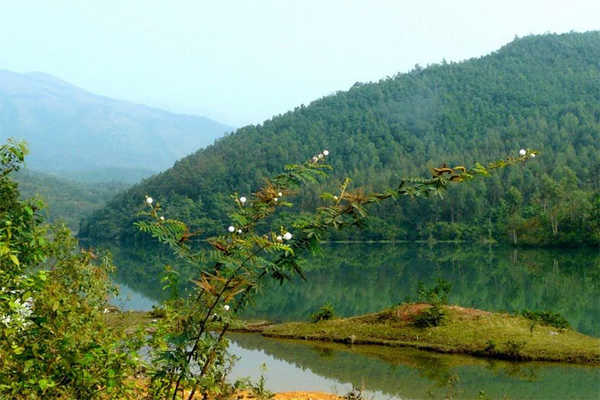
Yên Tử là tên của một ngọn núi cao phía đông bắc tỉnh Bắc Giang. Cảnh sắc thiên nhiên tươi đẹp. Khu bảo tồn Tây Yên Tử ở độ cao 200m – hơn 1000m so với mực nước biển và là địa điểm thu hút nhiều du khách đến thăm quan, nghỉ dưỡng.
Phần lớn du khách khi đến với khu bảo tồn để có được cơ hội khám phá thảm thực vật phong phú và thăm quan những khu di tích nổi tiếng như: di tích Hòn Tháp, Yên Mã, di tích Khám lạng…
3. Khu Du Lịch Sinh Thái Đồng Thông.
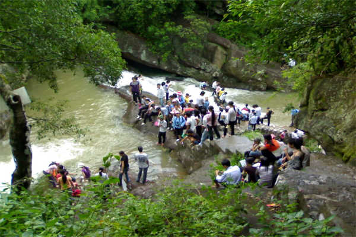
Khi đi du lịch Bắc Giang, khám phá khu di tích Tây Yên Tử, bạn có thể thăm quan khu du lịch sinh thái Đồng Thông. Đây không chỉ là khu du lịch hấp dẫn mà còn là khu bảo tồn thiên nhiên đóng vai trò quan trọng, với những thảm thực vật phong phú giúp điều hoà không khí và nơi đây chính là ngôi nhà của nhiều loại động vật quý hiếm.
Đặt biệt khi thăm quan mỏi mệt, du khách có thể thưởng thức những món ăn ngon đậm hương vị núi rừng hiếm nơi nào có được như: mật ong rừng Yên Tử, rượu men lá…
4. Làng Thổ Hà.
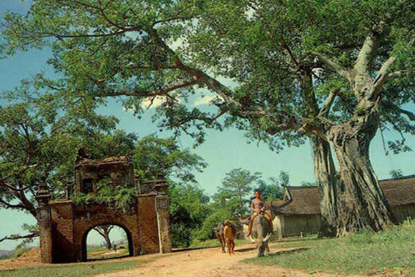
Là một ngôi làng có lịch sử hàn trăm năm. Địa danh làng Thổ Hà thường có trong nhiều chương trình tour du lịch Bắc Giang của nhiều đơn vị lớn. Khi đến với Làng Thổ Hà, du khách sẽ được tận hưởng được không gian cổ kính, khí hậu trong lành thơ mộng, cây đa, bến nước, đình làng Thổ Hà, một ngôi đình cổ nổi tiếng xứ Kinh Bắc. Ngôi đình được xây trên một khuôn viên 3000m2 theo kiến trúc cổ độc đáo.
Ngôi làng Thổ Hà nằm tại xã Vân Hà, huyện Việt Yên. Bao quanh là sông nước, muốn đi lại giữa các vùng thì phải dùng phương tiện đò và đây là yếu tố hấp dẫn du khách đến với Thổ Hà.
5. Hồ Cấm Sơn.
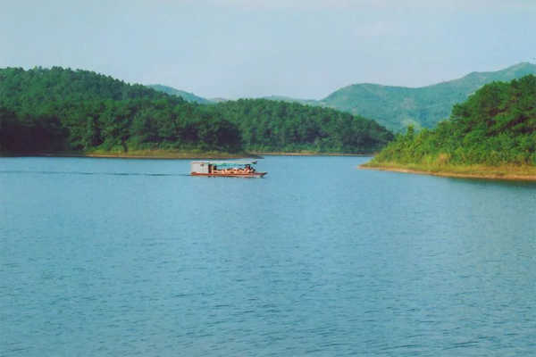
Nằm ở huyện Lục Ngạn giáp ranh với tỉnh Lạng Sơn. Mặt hồ rộng 2.600ha. Vào mùa mưa, lũ nhiều nước dâng lên cao, mặt hồ có thể rộng tới 3000ha. Chiều dài hồ gần 30km, bề ngang nơi rộng nhất được 7km, chỗ hẹp nhất 200m.
Xung quanh hồ Cấm Sơn có núi cao bao bọc, bờ chính là chân núi và rừng cây cao. Đây là khu vực thăm quan, dã ngoại, nghỉ dưỡng, vận động thể lực và thám hiểm rất tốt. Muốn đến hồ, du khách đi từ hà Nội qua Bắc Ninh với đoạn đường dài 31km, tới Bắc Giang 51km rồi đến sông Hoá 98km và đến khu vực Hồ.
6. Khu Du Lịch Khuôn Thần.
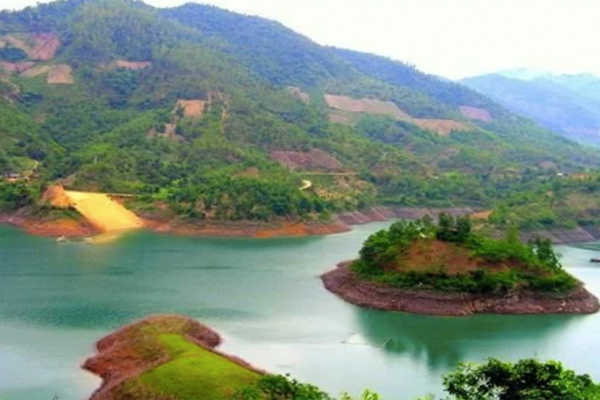
Nơi đây có hồ rộng 240ha, xung quanh là dãy núi được phủ thông xanh. Trong lòng hồ có 5 hòn đảo nhỏ đã được trồng thông xanh từ 15 đến 20 tuổi.
Muốn đi tới khu du lịch Khuôn Thần, du khách từ Bắc Giang phải đi ngược lên vùng Đông Bắc chừng 40km, tới phố Chũ rẽ trái đi 10km nữa là tới khu du lịch Khuôn Thần thuộc huyện Lục Ngạn.
Bao quanh hồ là khu rừng có diện tích khoảng 700ha, gồm rừng tự nhiên 300ha và rừng thông 400ha. Khu du lịch còn có những vườn cây ăn trái xung quanh trồng những loại vải thiều, vải Thái Lan, hồng, na… Đền từ Mã thờ một danh tướng thời Trần đã được nhà nước xếp hạng di tích văn hoá cũng nằm trong khu vực này.
Du khách nghỉ dưỡng tại khu du lịch này có thể cắm trại, dã ngoại trên mặt hồ với thuyền đạp vịt hoặc thuyền máy, thưởng thức vài thức ăn vặt ngon miệng như trái cây, hạt dẻ, uống mật ong, rượu tắc kè… và tham dự các buổi sinh hoạt văn hoá với người địa phương như hát soong hao với người Sán Chỉ, Cao Lan và Tày, Nùng.
7. Rừng Cấm Nguyên Sinh Kẻ Rỗ.
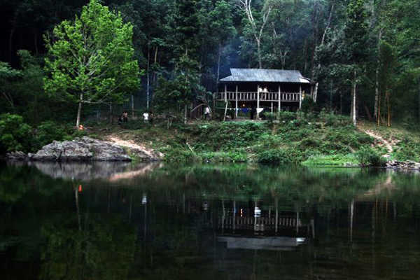
Khu rừng cấm thuộc xã An Lạc, huyện Sơn Động, có diện tích 7.153ha với hệ thống thực vật gồm 236 loài cây lấy gỗ, 255 loài cây dùng làm dược liệu và động vật có 37 loài thú, 73 loài chim, 18 loài bò sát, trong đó có 7 loài thuộc loại động vật quý hiếm. Trong khu rừng có nhiều dòng nước trong vắt lượn quanh. Đây là rừng cấm nguyên sinh còn giữ được vẻ đẹp nguyên thuỷ và hoang dã.
Tỉnh Bắc Giang còn có một số hồ đang dần dần khai thác như hồ Hố Cao ở huyện lạng Giang làm nơi nghỉ mát rất tốt. Hồ Cầu Rễ ở huyện Yên Thế có cảnh quang đẹp mắt. Ở huyện Yên Thế còn có đập và đền suối Cấy cũng thu hút được nhiều du khách tới thăm quan.
8. Khu Du Lịch Suối Mỡ.
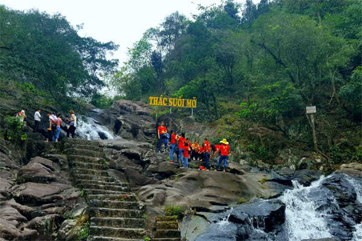
Nằm cách thành phố Bắc Giang 37km theo đường 31 và đường 293 về phía Đông. Khu di tích này có đền thờ bà chúa Thượng Ngàn vốn là công chúa Quế My Nương đời vua Hùng thứ 16. Đền gồm 3 nơi: Đền Hạ, Trung và Thượng nằm dọc theo dòng suối Mỡ. Từ đền Hạ đến Đền Thượng nếu đi bộ phải mất 1 giờ và nếu đi dọc theo bờ suối phải mất 2 giờ. Phong cảnh nơi đây rất trữ tình.
9. Di Tích Thành Xương Giang.
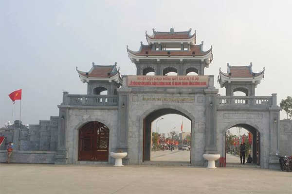
Di tích này nằm ở phường Thọ Xương, cách thành phố Bắc Giang 4km, cạnh quốc lộ 1A đi Lạng Sơn. Thành này do quân nhà Minh xây vào thế kỷ thứ 15 để trấn giữ cửa ngõ đường rút quân về phía Bắc.
Nghĩa quân Lam Sơn của Lê Lợi do tướng Trần Nguyên Hãn chỉ huy sau gần 1 năm vây hãm đã đánh chiếm được thành này trước khi viện binh của quân Minh vào biên giới Lạng Sơn kéo xuống nước ta. Hệ thống thành cổ Xương Giang hiện nay vẫn còn dài khoảng 600m, có 4 cổng chính, diện tích khoảng 27ha.
VI. Đặc Sản Bắc Giang.
Khi du lịch Bắc Giang nên ăn gì ? đặc sản Bắc Giang là gì ? là chủ đề được giới du khách quan tâm. Sau những chặng đường mệt mỏi, nghỉ ngơi và thưởng thức những món ăn ngon thì không gì bằng. Dưới đây là một số món săn đặc sản Bắc Giang bạn nên thưởng thức.
– Bánh Đa Thổ Hà: Là loại bánh căng tròn, vàng thơm cùng tô điểm vừng rang cùng với vị bùi của dừa nạo, khi ăn bạn sẽ cảm thấy hương vị đặc trưng hấp dẫn.
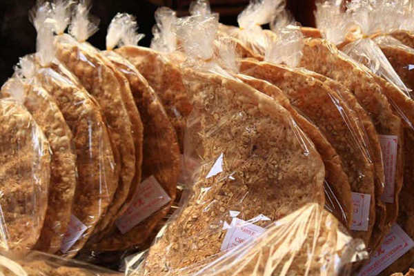
– Xôi Trứng Kiến Lục Ngạn: Là món ăn hương vị độc đáo khác xa với xôi bán tại miền xuôi. Món ăn được nhiều người dân địa phương dùng và khá giàu dinh dưỡng.
– Mỳ Chũ: Sợi mỳ dai, ngon, đậm đà được chế biến thành món ăn ngon tuyệt.
– Cua da hấp bia khi ăn có vị ngọt, thịt mềm cực kỳ thơm ngon.
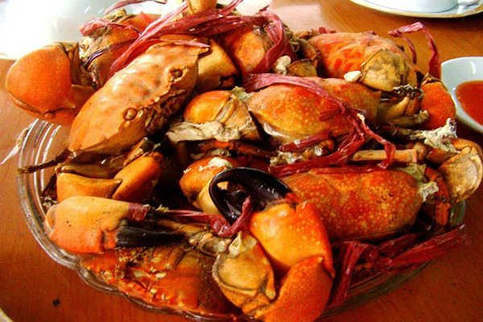
– Vải Thiều Lục Ngạn: Khi du lịch Bắc Giang vào đúng mùa vải chín, khung cảnh xung quanh nhộm một màu đỏ rực trông khá đẹp mắt và quả vải Lục Ngạn nổi tiếng là vị ngọt đậm đà là món ăn luôn thu hút nhiều du khách và người dân địa phương.
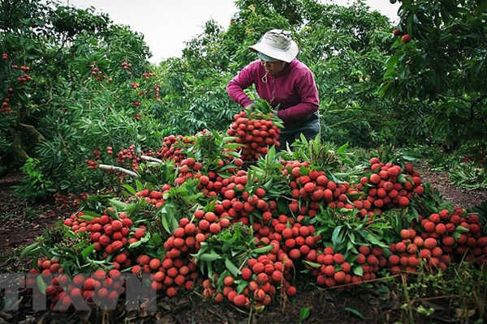
Ngoài những món ăn trên, bạn có thể ghé hàng quán để thưởng thức nhiều món ăn khác. Sau đây là một số quán ăn phục vụ chu đáo với những món ăn hấp dẫn được cộng đồng khách du lịch Bắc Giang đánh giá cao.
– Công Ty Ăn Uống Phục Vụ: Nằm ở đường Nguyễn Gia Thiều, thành phố Bắc Giang. Hiện công ty đã xây dựng trạm dừng chân để tiếp đón du khách với những thực đơn phong phú đa dạng, có đặc sản Bắc Giang và thực đơn 3 miền. Số điện thoại (0204)03 854 951
– Nhà Sàn 88 Quán tại Lê Lợi, tp Bắc Giang. Là điểm dừng chân thưởng thức món ăn hấp dẫn với nhiều du khách. Nhà sàn được xây theo kiến trúc độc lạ, với phong cách phục vụ tận tình, chu đáo. số điện thoại liên hệ (0204)03 550 283
Bên cạnh những địa danh du lịch Bắc Giang và những món ăn đặc sản Bắc Giang hấp dẫn trên. Bắc Giang còn nhiều điều kỳ bí đang chờ bạn đến khám phá. Hãy đồng hành cùng Du Lịch Việt nhé.